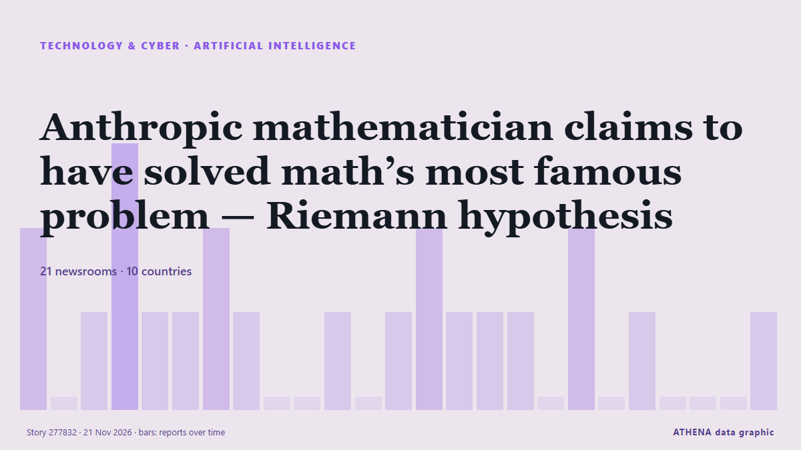

Τεχνητή νοημοσύνη
ΧορηγούμενοΠαρουσιάζεται από  Cybernetics and Artificial Intelligence Lab Welcome to the Cybernetics and Artificial Intelligence Laboratory, established at the Department of Business Administration of the National and Kapodistrian University of Athens. The lab is headed by Professor Dimitrios Thomakos. The lab aims to do research that can be published in top venues. Our research uses tools and methods of Artificial Intelligence, and lies in the following areas: - Forecasting - Decision making - Cyber security - Finance We are always looking forward to collaborating with exceptional students!
Cybernetics and Artificial Intelligence Lab Welcome to the Cybernetics and Artificial Intelligence Laboratory, established at the Department of Business Administration of the National and Kapodistrian University of Athens. The lab is headed by Professor Dimitrios Thomakos. The lab aims to do research that can be published in top venues. Our research uses tools and methods of Artificial Intelligence, and lies in the following areas: - Forecasting - Decision making - Cyber security - Finance We are always looking forward to collaborating with exceptional students!
| 8 Νοε | 0 |
|---|---|
| 9 Νοε | 0 |
| 10 Νοε | 0 |
| 11 Νοε | 0 |
| 12 Νοε | 0 |
| 13 Νοε | 0 |
| 14 Νοε | 0 |
| 15 Νοε | 0 |
| 16 Νοε | 2 |
| 17 Νοε | 0 |
| 18 Νοε | 9 |
| 19 Νοε | 8 |
| 20 Νοε | 5 |
| 21 Νοε | 0 |
Οι τίτλοι των ειδήσεων παρουσιάζονται στα αγγλικά, όπως δημοσιεύτηκαν.

Anthropic mathematician claims to have solved math’s most famous problem — Riemann hypothesis
The Riemann hypothesis, often considered the most important unsolved problem in mathematics, may be the latest conquered by artificial intelligence (AI). από Deccan Herald
Anthropic surges in market debut after biggest IPO on record, despite fears that AI is running amok
The artificial intelligence giant Anthropic rose sharply Thursday after making the biggest public stock offering ever, at one point s. από Mainichi (English)
Anthropic’s post-debut stumble delivers reality check for AI trade
Anthropic could offer an early read on investor appetite for the sector after a turbulent stretch, with a sustained decline likely to deepen concerns over lofty valuations and massive AI spending. από Rappler
What Anthropic’s record $81 billion IPO means for Gulf investors
The creator of the Claude chatbot has raised $81.3 billion in the world's largest IPO, and Gulf investors have emerged as major players. από Al-Monitor
Anthropic’s blockbuster debut tests Wall Street’s faith in AI boom
ANTHROPIC notched a valuation of about $2 trillion in its Nasdaq debut on Thursday, edging past SpaceX’s June… από BusinessWorld
Who are Anthropic’s 7 co-founders? Meet the former OpenAI colleagues now worth billions
The company counts physicists, a former journalist and an associate of the pope among its guiding lights The paper fortunes of Anthropic’s seven co-founders reached a total of more than $180bn on… από Guardian Business
Dutch watchdog advises against AI camera glasses because of safety risks
Warning follows investigation into 6 pairs of glasses; 2 underwent extensive testing in simulated real-life situations involving human safety. από Anadolu Agency (English)
From Apple to Anthropic: World's 10 most valuable companies after blockbuster IPO
Where does Williams F1 backer Anthropic rank in the most valuable F1 sponsors after its November 2026 IPO? από The Race
Anthropic pulled off the biggest IPO ever. What that means, by the numbers
It ends its first trading day at US$97.17 a share, over 17% higher than its offering price. από The Business Times
Meta to price Muse Charm gadget at $300, The Information reports
Unnerved employees are worried the AI agent could be mixing up conversations and exposing users’ data. από The Straits Times
The seven Anthropic founders who are about to become multi-billionaires
The AI company behind Claude is about to sell its shares on the US stock market - making its founders very rich. από BBC News
Samsung says neocloud debt poses limited risk to AI industry growth
Samsung Electronics rejected concerns that debt-financed expansion by neocloud providers could trigger a broader slowdown in artificial intelligence investment, saying these companies account for… από DigiTimes Asia
AI lab Anthropic sets stock market record with $81 billion IPO
Anthropic becomes the first "pure play" AI lab to go public, with an eye-watering $1.5 trillion valuation, a bellwether moment amid growing concerns of a financial bubble in the sector. από France 24 English
Anthropic raises record $81.3 billion in blockbuster IPO
Anthropic ANT.O has raised $81.3 billion in the largest stock-market debut on record after upsizing its offering, valuing the Claude chatbot maker at $1.5 trillion in a deal that defies concerns… από Cyprus Mail
GTA 6 Review: Grand Theft Auto VI is staggering in scale but still grounded in reality
Grand Theft Auto VI is so vast in scale, it has rewritten the rules for what a game can be. από The Scotsman
Tony Fadell joins Smartex as chair as it launches AI fabric checks for H&M
Tony Fadell, who helped create the iPod and iPhone, has become chair of Smartex, a startup that uses AI to check fabric for defects, Fortune reported. από The Next Web
Surge in software patches likely behind recent tech outages, experts say
AI tools and large language models have supercharged the discovery of vulnerabilities in software. από The Straits Times
US senators warn White House that AI-enabled cyber threats are outpacing defenses
Nov 18 - A pair of US senators on Wednesday warned the Trump administration that \"rapidly escalating\" AI-enabled cyber threats were outpacing the country's defenses, amid broader concerns about… από The Straits Times
Over half million students set to take annual college entrance exam amid AI cheating concerns
SEOUL, Nov. 19 (Yonhap) -- The annual college entrance exam was set to be held n... από Yonhap (English)